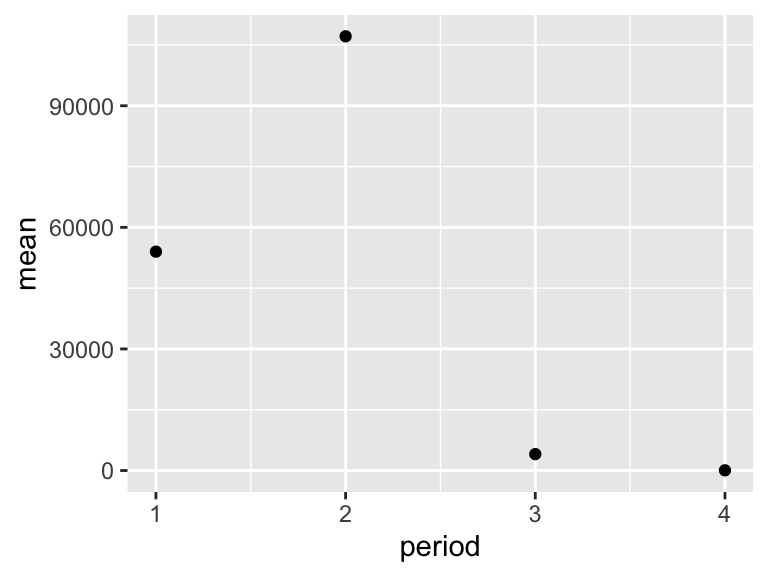

8 Summary Statistics
8.1 Summary statistics
So far, we have been importing and plotting raw data. This is well and good, but it is not always suitable. Often we have scientific questions that cannot be answered by looking at raw data alone, or sometimes there is too much raw data to plot. For this, we need summary statistics - things like averages, standard deviations, and so on. While these metrics can be computed in Excel, programming such can be time consuming, especially for group statistics. Consider the example below, which uses the NY Trees dataset.
The NY Trees dataset contains information on nearly half a million trees in New York City (this is after considerable filtering and simplification):
library(tidyverse)
ny_trees <- read_csv("https://thebustalab.github.io/R_For_Chemists/sample_data/NY_trees.csv")
## Rows: 378762 Columns: 14
## ── Column specification ────────────────────────────────────────────────────────
## Delimiter: ","
## chr (9): address, tree_loc, pit_type, soil_lvl, status, spc_latin, spc_commo...
## dbl (5): tree_height, tree_diameter, zipcode, latitude, longitude
##
## ℹ Use `spec()` to retrieve the full column specification for this data.
## ℹ Specify the column types or set `show_col_types = FALSE` to quiet this message.
ny_trees
## # A tibble: 378,762 × 14
## tree_height tree_diameter address tree_loc pit_type soil_lvl status spc_latin
## <dbl> <dbl> <chr> <chr> <chr> <chr> <chr> <chr>
## 1 21.1 6 1139 5… Front Sidewal… Level Good PYRUS CA…
## 2 59.0 6 2220 B… Across Sidewal… Level Good PLATANUS…
## 3 92.4 13 2254 B… Across Sidewal… Level Good PLATANUS…
## 4 50.2 15 2332 B… Across Sidewal… Level Good PLATANUS…
## 5 95.0 21 2361 E… Front Sidewal… Level Poor PLATANUS…
## 6 67.5 19 2409 E… Front Continu… Level Good PLATANUS…
## 7 75.3 11 1481 E… Front Lawn Level Excel… PLATANUS…
## 8 27.9 7 1129 5… Front Sidewal… Level Good PYRUS CA…
## 9 111. 26 2076 E… Across Sidewal… Level Excel… PLATANUS…
## 10 83.9 20 2025 E… Front Sidewal… Level Excel… PLATANUS…
## # … with 378,752 more rows, and 6 more variables: spc_common <chr>,
## # trunk_dmg <chr>, zipcode <dbl>, boroname <chr>, latitude <dbl>,
## # longitude <dbl>More than 300,000 observations of 14 variables! That’s 4.2M data points! Now, what is the average and standard deviation of the height and diameter of each tree species within each NY borough? Do those values change for trees that are in parks versus sidewalk pits?? I don’t even know how one would begin to approach such questions using traditional spreadsheets. Here, we will answer these questions with ease using two new commands: group_by() and summarize(). Let’s get to it.
Say that we want to know (and of course, visualize) the mean and standard deviation of the heights of each tree species in NYC. We can see that data in first few columns of the NY trees dataset above, but how to calculate these statistics? In R, mean can be computed with mean() and standard deviation can be calculated with sd(). Also, keep in mind that a single column of a dataset can be accessed using $. So, we can calculate the average and standard deviation of all the trees in the data set as follows:
mean(ny_trees$tree_height)
## [1] 72.57976
sd(ny_trees$tree_height)
## [1] 28.65391Great! But how to do this for each species? We need to divide up the data by species, then compute the mean and standard deviation, then recombine the results into a new table. First, we use group_by(). Note that in ny_trees, species are indicated in the column called spc_latin. Once the data is grouped, we can use summarize() to compute statistics. Please note that both group_by() and summarize() require .data = as an argument, as opposed to data =, which we have been using up to this point.
library(tidyverse)
ny_trees %>%
group_by(spc_latin) %>%
summarize(mean_height = mean(tree_height))Bam. Mean height of each tree species. summarize() is more powerful though, we can do many summary statistics at once:
ny_trees_by_spc <- group_by(.data = ny_trees, spc_latin)
ny_trees_by_spc_summ <- summarize(.data = ny_trees_by_spc, mean_height = mean(tree_height), stdev_height = sd(tree_height))
ny_trees_by_spc_summNow we can use this data in plotting. For this, we will use a new geom, geom_pointrange, which takes x and y aesthetics, as usual, but also requires two additional y-ish aesthetics ymin and ymax. Note that in this case, if we map spc_latin to the x axis, the x axis tick labels will have long names that will overlap in our plot. In the past we have avoided this by swapping the mappings of x and y in out plots. Here, this gets a bit tedious since we will have to change ymin and ymax as well. Instead of all this, we can just add coord_flip() to our plot, which will swap x and y axes automatically. Also, note that in the aesthetic mappings for ymin and ymax, we can use a mathematical expression: mean-stdev and mean+stdev, respectivey. In our case, these are mean_height - stdev_height and mean_height + stdev_height. Let’s see it in action:
ggplot(data = ny_trees_by_spc_summ) +
geom_pointrange(
aes(
x = spc_latin,
y = mean_height,
ymin = mean_height - stdev_height,
ymax = mean_height + stdev_height
)
) +
coord_flip()Cool! Just like that we’ve found (and visualized) the average and standard deviation of tree heights, by species, in NYC. But it doesn’t stop there. We can use group_by() and summarize() on multiple variables (i.e. more groups). We can do this to examine the properties of each tree species in each NYC borough. Let’s check it out.
ny_trees_by_spc_boro <- group_by(.data = ny_trees, spc_latin, boroname)
ny_trees_by_spc_boro_summ <- summarize(.data = ny_trees_by_spc_boro, mean_diam = mean(tree_diameter), stdev_diam = sd(tree_diameter))
ny_trees_by_spc_boro_summNow we have summary statistics for each tree species within each borough. This is different from the previous plot in that we now have an additional variable (boroname) in our summarized dataset. This additional variable needs to be encoded in our plot. Let’s map boroname to x and facet over tree species, which used to be on x. We’ll also manually modify the theme element strip.text.y to get the species names in a readable position.
ggplot(data = ny_trees_by_spc_boro_summ) +
geom_pointrange(
aes(
x = boroname,
y = mean_diam,
ymin = mean_diam-stdev_diam,
ymax = mean_diam+stdev_diam
)
) +
facet_grid(spc_latin~.) +
coord_flip() +
theme(
strip.text.y = element_text(angle = 0)
)Excellent! And if we really want to go for something pretty:
library(RColorBrewer)
ggplot(data = ny_trees_by_spc_boro_summ) +
geom_pointrange(
aes(
x = boroname,
y = mean_diam,
ymin = mean_diam-stdev_diam,
ymax = mean_diam+stdev_diam,
fill = spc_latin
), color = "black", shape = 21
) +
labs(
x = "Borough",
y = "Trunk diameter",
caption = str_wrap("Figure 1: Diameters of trees in New York City. Points correspond to average diameters of each tree species in each borough. Horizontal lines indicate the standard deviation of tree diameters. Points are colored according to tree species.", width = 80)
) +
facet_grid(spc_latin~.) +
guides(fill = "none") +
scale_fill_brewer(palette = "Paired") +
coord_flip() +
theme_bw() +
theme(
strip.text.y = element_text(angle = 0),
plot.caption = element_text(hjust = 0.5)
)Now we are getting somewhere. It looks like there are some really big maple trees (Acer) in Queens.
8.2 The pipe (%>%)
When we want to get summary statistics for a dataset, we often end up creating lots of new objects, sometimes with convoluted names. For example, what if we want to know and visualize the average temperature across the lakes in each of the three Alaska parks? We might do something like the below:
library(tidyverse)
AK_lakes <- read_csv("https://thebustalab.github.io/R_For_Chemists/sample_data/alaska_lake_data.csv")
## Rows: 220 Columns: 7
## ── Column specification ────────────────────────────────────────────────────────
## Delimiter: ","
## chr (4): lake, park, element, element_type
## dbl (3): water_temp, pH, mg_per_L
##
## ℹ Use `spec()` to retrieve the full column specification for this data.
## ℹ Specify the column types or set `show_col_types = FALSE` to quiet this message.
head(AK_lakes)
## # A tibble: 6 × 7
## lake park water_temp pH element mg_per_L element_type
## <chr> <chr> <dbl> <dbl> <chr> <dbl> <chr>
## 1 Devil_Mountain_Lake BELA 6.46 7.69 C 3.4 bound
## 2 Devil_Mountain_Lake BELA 6.46 7.69 N 0.028 bound
## 3 Devil_Mountain_Lake BELA 6.46 7.69 P 0 bound
## 4 Devil_Mountain_Lake BELA 6.46 7.69 Cl 10.4 free
## 5 Devil_Mountain_Lake BELA 6.46 7.69 S 0.62 free
## 6 Devil_Mountain_Lake BELA 6.46 7.69 F 0.04 free
AK_lakes_by_park <- group_by(.data = AK_lakes, park)
AK_lakes_by_park_summ <- dplyr::summarize(.data = AK_lakes_by_park, mean_temperature = mean(water_temp))
ggplot(AK_lakes_by_park_summ) + geom_point(aes(x = park, y = mean_temperature))
In order to do that, we created two new objects AK_lakes_by_park and AK_lakes_by_park_summ. In big analysis chains, we can end up creating lots of objects with complicated names. There must be a better way! There is. Meet the pipe: %>%. It sends the output from one command directly to the next, so we neither need to have each command create a new object, nor do we need to start each command by telling it what data to use. With the pipe, the same analysis as above can be done with the text below. Neat! Easier!
library(tidyverse)
read_csv("https://thebustalab.github.io/R_For_Chemists/sample_data/alaska_lake_data.csv") %>%
group_by(park) %>%
dplyr::summarize(mean_temperature = mean(water_temp)) %>%
ggplot() + geom_point(aes(x = park, y = mean_temperature))
## Rows: 220 Columns: 7
## ── Column specification ────────────────────────────────────────────────────────
## Delimiter: ","
## chr (4): lake, park, element, element_type
## dbl (3): water_temp, pH, mg_per_L
##
## ℹ Use `spec()` to retrieve the full column specification for this data.
## ℹ Specify the column types or set `show_col_types = FALSE` to quiet this message.
8.3 Tidy data
When we make data tables by hand, it’s often easy to make a wide-style table like the following. In it, the abundances of 7 different fatty acids in 10 different species are tabulated. Each fatty acid gets its own row, each species, its own column.
library(tidyverse)
FAs <- read_csv("https://thebustalab.github.io/R_For_Chemists/sample_data/fadb_sample.csv")
## Rows: 7 Columns: 11
## ── Column specification ────────────────────────────────────────────────────────
## Delimiter: ","
## chr (1): fatty_acid
## dbl (10): Agonandra_brasiliensis, Agonandra_silvatica, Agonandra_excelsa, He...
##
## ℹ Use `spec()` to retrieve the full column specification for this data.
## ℹ Specify the column types or set `show_col_types = FALSE` to quiet this message.
FAs
## # A tibble: 7 × 11
## fatty_acid Agonandra_brasi… Agonandra_silva… Agonandra_excel… Heisteria_silvi…
## <chr> <dbl> <dbl> <dbl> <dbl>
## 1 Hexadecan… 3.4 1 1.2 2.9
## 2 Octadecan… 6.2 0.1 0.4 0.1
## 3 Eicosanoi… 4.7 3.5 1.7 0.1
## 4 Docosanoi… 77.4 0.4 1 7.4
## 5 Tetracosa… 1.4 1 1.4 1.7
## 6 Hexacosan… 1.9 12.6 23.1 46.6
## 7 Octacosan… 5 81.4 71.3 41.2
## # … with 6 more variables: Malania_oleifera <dbl>, Ximenia_americana <dbl>,
## # Ongokea_gore <dbl>, Comandra_pallida <dbl>, Buckleya_distichophylla <dbl>,
## # Nuytsia_floribunda <dbl>While this format is very nice for filling in my hand (such as in a lab notebook or similar), it does not groove with ggplot and other tidyverse functions very well. We need to convert it into a long-style table. This is done using pivot_longer(). You can think of this function as transforming both your data’s column names (or some of the column names) and your data matrix’s values (in this case, the measurements) each into their own variables (i.e. columns). We can do this for our fatty acid dataset using the command below. In it, we specify what data we want to transform (data = FAs), we need to tell it what columns we want to transform (cols = 2:11), what we want the new variable that contains column names to be called (names_to = "plant_species") and what we want the new variable that contains matrix values to be called (values_to = "relative_abundance"). All together now:
pivot_longer(data = FAs, cols = 2:11, names_to = "plant_species", values_to = "relative_abundance")
## # A tibble: 70 × 3
## fatty_acid plant_species relative_abundance
## <chr> <chr> <dbl>
## 1 Hexadecanoic acid Agonandra_brasiliensis 3.4
## 2 Hexadecanoic acid Agonandra_silvatica 1
## 3 Hexadecanoic acid Agonandra_excelsa 1.2
## 4 Hexadecanoic acid Heisteria_silvianii 2.9
## 5 Hexadecanoic acid Malania_oleifera 0.7
## 6 Hexadecanoic acid Ximenia_americana 3.3
## 7 Hexadecanoic acid Ongokea_gore 1
## 8 Hexadecanoic acid Comandra_pallida 2.3
## 9 Hexadecanoic acid Buckleya_distichophylla 1.6
## 10 Hexadecanoic acid Nuytsia_floribunda 3.8
## # … with 60 more rowsBrilliant! Now we have a tidy, long-style table that can be used with ggplot.